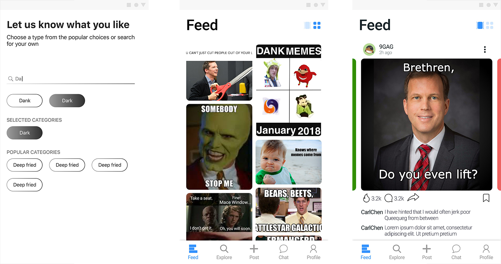

MayMayMe
Memes have become a predominant means of expression in the internet culture- they are not only used as a means of entertainment but as an important tool for advertising, spreading propaganda and even political ideologies. However, I have realized that memes are commonplace yet creating them is foreign. To bridge this meme consumer-producer gap, we are working on a platform which aims to enable people to be part of the meme conversation. We built a one-stop solution for all meme needs - a maker space where people can create memes using templates and basic editing tools, a feed to browse memes and a communications corner. We also hypothesize that memes can be an intrinsic indicator of a person’s likes/dislikes which we are testing by letting users connect on the basis of their meme preferences.

We have an intitial developer base of about 200 users who have agreed to upload around 10 memes everyday. We also conducted a usability study where we showcased our platform to about 50 people who said they would love to use the platform post launch. We are in the final stages of developement and are launching the platform in January 2019.